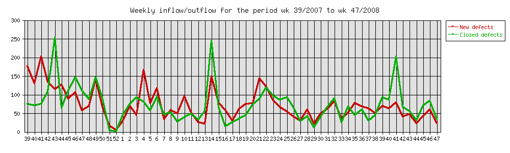
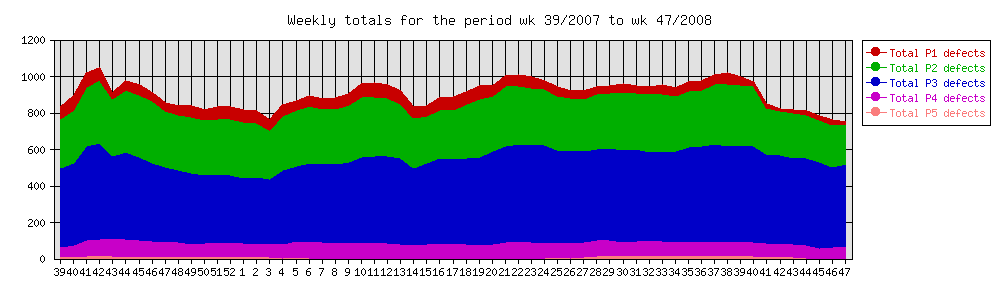
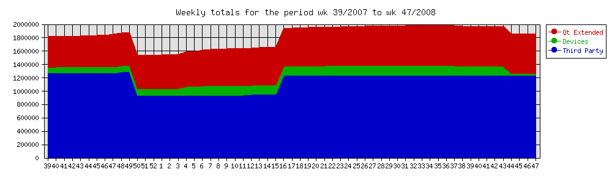
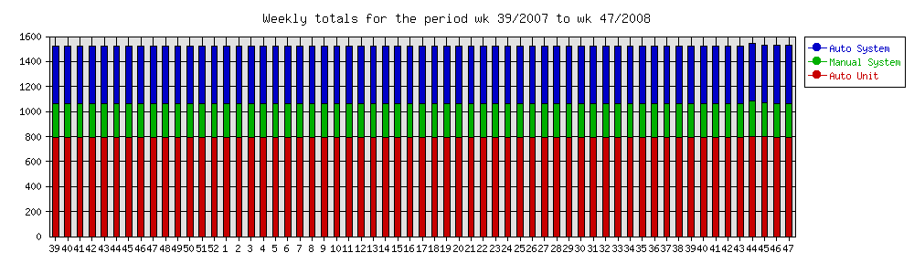
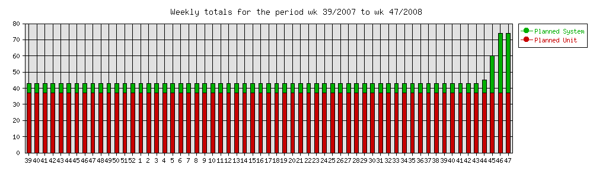

|
Home · All Namespaces · All Classes · Grouped Classes · Modules · Functions | |
Contents:
This document presents the test results for Qt Extended and reflect the state of the product at the time the package was produced.
The test results are grouped by module/component and for each component the number of passes and failures are shown.
All tests are documented in the Test Plan and depending on the product the actual tests may be shipped within the source package.
The average number of functional defects is 0.1 per tested component. The following table shows the components with a more than average number of defects:
| Component | # of Defects |
|---|---|
| src/libraries/qtuitest | 2 |
The following graph shows the Bug inflow and outflow per week.

The following graph shows a cumulative overview of all registered bugs.

The following graph shows the Source Lines of Code (SLOC) per week for Qt Extended, ThirdParty components and Devices.

The following chart shows the number of tests that are actively used in the release process. Note that the number of tests has been dramatically constant over the last year. This is due to the fact that a large amount of time has been invested in improving and rewriting tests. So the total amount is the same, but the quality has improved. 
The following chart shows the number of tests that are 'under development'. A test is under development if there is a template for the test in the source file, but no actual code/script has been written or the test has been explicitely marked as 'Under Construction'. Having tests under construction is a natural thing. Template tests can be written by any person, for instance the 'Test Manager', and then worked out by a QA staff member or developer. 
The following sections specify coverage related issues.
Tests are associated to a requirement using a special syntax in a Unit or System test. The following list specifies the requirements in our requirements database that do not have a test associated with it:
Our strategy is to get full test coverage of requirements. So the above listed requirements are likely candidates to get a test in the near future.
System tests are in principle always linked to a requirement using a special syntax in the System test. The following list specifies the tests that do not have such a link:
Note: Tests not linked to a requirement can mean that we've found some things that need to be tested that go beyond what is documented in the requirements, or it could indicate a missing requirement.
Each module typically has one or more Unit or System tests associated with the components contained in the module. The following list specifies those modules that have no coverage at all:
Note: Most modules that are listed as being untested have in reality been undergoing automated and or manual testing. In future patch releases more tests (and their results) may become available.
Each component typically has one or more Unit or System tests associated with it. The following list specifies those components that have no coverage at all:
Note: Most components that are listed as being untested have in reality been undergoing automated and or manual testing. In future patch releases more tests (and their results) may become available.
| Total number of tests | 778 |
| Tests run | 749 |
| Failed | 2 |
| Skipped | 29 |
| Passed | 747 |
| Run/Total -% | 96.3% |
| Pass/Run -% | 99.7% |
| Pass/Total -% | 96.0% |
The test results for each component are summarized in a table with the following columns:
| Module | The name of the module. In most cases the name is a hyperlink to a detailed description of the Module. |
| Component | The name of the component. In most cases the name is a hyperlink to a detailed description of the test results. |
| PR | The Pass Rate, calculated as (#passed/#tests) * 100. |
| RR | The Run Rate, calculated as (#skipped/#tests) * 100. |
| Total | The total number of available tests. |
| Passed | The number of tests that have passed. |
| Failed | The number of tests that have failed. |
| Skipped | The number of tests that have not been executed. |
The following table shows the results sorted by module. Note that components can be part of multiple modules and consequently can be shown multiple times in the table.
DISCLAIMER: Performance measurements are made on a number of devices that are a cross section of available devices in the market. When using the results to predict Qt Extended performance on another (untested) device it is important to understand that there are many factors that contribute to performance on a certain device. Just comparing the CPU and memory size will not be sufficient to make a reliable prediction. Only a port to the target device plus a reasonable effort to fix device specific performance bottlenecks will give a truly valid number.
Performance test results are available for:
| Copyright © 2009 Trolltech | Trademarks | Qt Extended 4.4.3 |